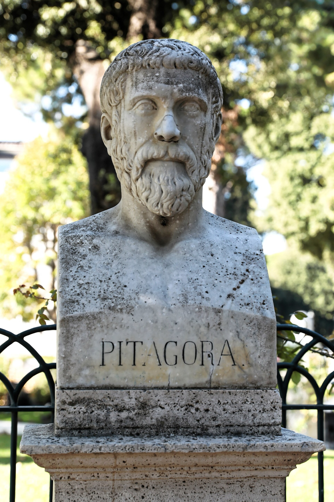

1. gaia · Mitotik filosofiara
§01 · Mundu-ikuskera mitikoa
Filosofia existitu baino lehen, gizateria dagoeneko galdera handiak egiten ari zitzaion bere buruari: zer da mundua, nondik gatoz, nola bizi behar dugu. Milaka urtez, mitoekin erantzun zien. Komeni da hortik hastea, filosofia ez baitzen hutsetik jaio: mitoarekin eztabaidan jaio zen.
Kalean, ia kontrajarriak diren bi zentzutan erabiltzen dugu “mito” hitza. Batzuetan zerbait apartekoa seinalatzen du (“Maradona futbolari mitikoa da”), eta beste batzuetan, besterik gabe, gezur bat (“mito bat da bazkaldu eta ordubete igaro arte ezin zarela bainatu”). Hemen ez digu balio ez batak ez besteak. Filosofiaren historiarako, mito bat jatorri ezezaguneko narrazio sinboloz kargatu bat da, mundua eta gizakiak diren bezalakoak nola bilakatu diren kontatzen duena. Ez da ipuin bat, ez alegia bat: historia sakratu bat da, eta horregatik du hainbesteko pisua kontatzen dutenengan.
Mito bat nola ezagutu. Lauri Honko folkloristak (1932-2002) lau ezaugarri proposatu zituen1. Formari dagokionez, konta eta antzez daitekeen kontakizun bat da. Edukiari dagokionez, izaki naturaz gaindikoez eta gertaera sakratuez dihardu. Funtzioari dagokionez, mundua azaltzen du (natura, gizakiak, erakundeak) eta, aldi berean, jokabide-eredu bat eskaintzen du: nola jokatu behar den eta zergatik esaten du. Eta testuinguruari dagokionez, erritoei loturik doa: mitoa ez da denbora-pasa bat, komunitate baten erlijio-bizitzaren zati bat baizik. Lau ezaugarrietatik, funtzioarena da guri gehien axola zaiguna: mitoak ez du mundua apaintzen, azaldu egiten du eta, bide batez, jokabidea ordenatzen du.
Hementxe dago gakoa. Bere mitoetan bizi den herri batek ez dauzka “kondaira batzuk”: mundu-ikuskera bat dauka, munduaren eta munduan duen lekuaren irudi oso bat. Mircea Eliadek (1907-1986) ondo adierazi zuen: mito bat ezagutzea gauzen ezkutuko jatorria ezagutzea da, eta jakite hori ez da buruz ikasten, erritoan bizi egiten da2. Eliaderentzat, mitoak beti jatorrien denbora bat kontatzen du: izaki naturaz gaindikoek mundua den bezalakoa egin zuten garai hura; erritoa errepikatzean, komunitatea sortze-denbora horretara itzultzen da eta berriro bizi du. Horregatik, gizarte bakoitzaren mitoek gizarte horrek bizia jokoan duen hartaz hitz egiten dute: herri ehiztariek ehizatzen dituzten animaliei buruzko mitoak kontatzen dituzte; nekazari-herriek, uztei buruzkoak; Japonian, lurrikarak Namazuren bidez azaltzen dira, sakonetan bihurrika dabilen siluro handiaren bidez.
Greziarren kasua. Ez ziren salbuespen izan. Filosofoen aurretik, munduaz greziarrek zuten irudia poetek kantatzen zutena zen. Hesiodoren Teogonian, unibertsoa ez da “fabrikatzen”: jaio egiten da. Lehenik Kaosa dago; gero Gea agertzen da, Lurra, eta hark Urano sortzen du, Zerua; eta bien elkartzetik jaiotzen dira, belaunaldiz belaunaldi, kosmosa betetzen duten jainkoak eta indarrak. Homerok, bere aldetik, gerran eta gizakien etxean esku hartzen duten jainkoz betea zuen mundu hori. Erlijioak arautzen zuen poliseko bizitza, eta jainko-genealogia horrek osorik eta ordenaturik azaltzen zuen zergatik den mundua den bezalakoa. Horixe da mundu-ikuskera bat: ez kontakizun solte bat, errealitatearen mapa oso bat baizik.
Guk, zientziaren oinordeko garenok, mito bat egiazkoa ala faltsua den galdetzeko joera dugu. Galdera okerra da. Kategoria dikotomikoekin begiratzen diogu munduari (erreala ala irreala, naturala ala naturaz gaindikoa, egia ala gezurra), baina kultura askorentzat eguneroko esperientziak, ametsek eta kontakizun sakratuak errealitate bakar bat osatzen dute. Mitoa ez da zientziarekin lehian aritzen gertaera egiaztagarrien eremuan: perspektiba bat eskaintzen du, zeinetatik munduak zentzua hartzen baitu. Horregatik izan daiteke “egiazkoa” bizi duenarentzat, egiaztatu ezin bada ere.
Horrek esan nahi al du mitoa pentsamendu “primitiboa” dela, arrazoitzen oraindik ikasi ez duen zientzia bat? Ez zaitez fidatu ideia horretaz. Ernst Cassirerrek (1874-1945) defendatu zuen pentsamendu mitikoak, zientifikoak bezala, kausen eta ondorioen arteko erlazioak bilatzen dituela, modu sinbolikoan bada ere. Claude Lévi-Strauss (1908-2009) urrunago joan zen: ez dago funtsezko alderik mitoak sortzen dituen adimenaren eta zientzia egiten duenaren artean, biek munduaz arrazoitzen baitute; mitoak bere barne-logika propioa du. Ez da, beraz, ezagutza akastun bat, pentsamenduaren beste dimentsio bat baizik.
Zergatik hasi mitotik? Filosofiaren historia batean, mitoetan hainbeste luzatzeak justifikazioa eskatzen du. Bi arrazoi daude. Lehena: pentsamendu mitikoa ez da historiaurreko kapitulu itxi bat. Milaka urtez moldatu du mundua ulertzeko gure modua, eta ez filosofiak ez zientziak ez dute ezabatu; haren gainean altxatu dira. Substratuak hor dirau3. Bigarren arrazoia historikoa da: filosofia Grezian sortu zenean, mitoaren aurrez aurre sortu zen. Bere burua baieztatzeko, pentsatzeko modu berriak aldea markatu behar izan zuen, eta aldarrikatu zaharra ordezkatzera zetorrela.
Ñabardura bat kontakizun heroikoari. Deskribatu berri dugun erlijiotasun ofiziala indarra galduz joan zen, eta arrakala horretan (gauzak beste modu batera azaltzeko premian) egin zuen aurrera filosofiak. Ez zen ebaki garbi bat izan: o.a.a. VI. eta V. mendeetan bertan, greziar batzuek zalantzan jartzen zituzten kontakizun zaharrak, eta lehen filosofoetako hainbatek irudi mitikoez baliatzen jarraitu zuten beren ideiak azaltzeko. Mitotik logoserako urratsa (kontakizun sakratutik azalpen arrazionalerakoa) egunsenti geldo bat izan zen, trumoi bat baino gehiago. Egunsenti horri, eta hura protagonizatu zutenei, eskaintzen dizkiegu hurrengo orrialdeak.
§02 · Filosofiaren sorrera Grezian
Non eta noiz hasi zen hau guztia? Ez Atenasen, agian usteko zenuen bezala, Egeo itsasoaren beste ertzean baizik: Mileton, Joniako hiri oparo batean, gaur egungo Turkiako kostaldean, o.a.a. VI. mende aldera. Eta ez Greziaren bihotzean, haren kolonietan baizik: greziarrek Mediterraneo osoan barrena ereindako merkataritza-guneetan. Galdera berez sortzen da: zergatik han, eta zergatik orduan? Zergatik ez Egipton, Babilonian edo Txinan, zibilizazio askoz zaharrago eta boteretsuagoetan? Haiek ere egiten zizkioten beren buruari galdera handiak, baina filosofia deitzen diogun erantzuna hemen baino ez zen mamitu4.

Mesfidantzaz hartu behin eta berriz errepikatzen den erantzun bat: “greziar mirariarena”, kostalde hartan, herri baten jenio hutsez, kausarik gabeko zerbait bat-batean erne balitz bezala. Ez zen miraririk izan. Baldintza batzuk izan ziren, eta, batera gertatzean, pentsatzeko modu berri bat egin zuten posible. Merezi du haiei erreparatzea, filosofiak berezitik zer duen esaten baitigute.
Baldintza politikoa. Greziarren bizitza polisetan antolatzen zen: hiri-estatu txikietan, non hiritar askeen multzo batek erabakitzen baitzituen, elkarrekin, auzi publikoak. Egipton edo Babilonian ez bezala, Grezian ez zegoen apaiz-kasta boteretsurik, ez munduari buruzko egia, ukiezin, gordeko zuen liburu sakraturik. Horrek jokoaren arauak aldatzen ditu: agintaritza bakar batek ere erantzunak monopolizatzen ez dituenean, azalpenak eztabaida publikoaren mende geratzen dira. Plazan eta batzarrean, baieztapen bat ez da inposatzen apaiz batek esan duelako; arrazoiekin eusten zaio eta arrazoiekin gezurtatzen da. Argudiatzeko eta ideiei kontuak eskatzeko ohitura hori da filosofia hazten den lurra.
Merkataritza eta beste herriekiko harremana. Joniako koloniak portuak ziren, mundu erdiko merkatariek, bidaiariek eta kontakizunek zeharkatuak. Egunero egiptoar, feniziar eta persiarrekin harremanetan dabilenak laster deskubritzen du herri bakoitzak bere mitoak kontatzen dituela munduaren jatorriaz, eta guztiek uste oso berarekin. Deskubrimendu horrek erlatibizatu egiten du: bertsio sakratu asko badaude, eta elkarrekin bateraezinak, bat bera ere ezin da jada begi-bistakotzat eman, eta galdera irekitzen da: zein da egiazkoa, baten bat baldin bada?
Abstrakzioaren tresnak. Izan ziren, gainera, tresna batzuk; haiek gabe, pentsamendu filosofikoak ez zukeen izango zerekin lan egin. Idazkera alfabetikoak, greziarrek feniziarrei hartu zietenak, edozein ideia zeinu gutxi batzuetan finkatzea eta fideltasunez transmititzea ahalbidetu zuen; eta idatzitako ideia bat berriro irakur daitekeen ideia bat da, beste batekin konpara daitekeena eta patxadaz gezurta daitekeena, ia ezinezkoa dena guztia oroimenean bizi denean. Txanpon-diruak abstrakzio nabarmen batera ohitu zuen gogoa: gauza guztiz desberdinak (oilo bat, zapata-pare bat, lanegun bat) balio-neurri bakar batera ekartzera. Eta matematika eta astronomia, hein batean babiloniarrengandik eta egiptoarrengandik jasoak, eraldatu egin zituzten greziarrek: soroak neurtzeko edo ibai-goraldiak aurresateko errezeta praktikoetatik jakite orokor eta frogagarri bat atera zuten, “honek funtzionatzen du” soilik ez, “hau horrela da, eta hauxe da arrazoia” dioena.
Kosmosaren ideia. Baldintza horiek guztiek urrats erabakigarri bakar batean egiten dute bat, filosofia benetan inauguratzen duen hartan. Kosmos hitzak “ordena” esan nahi du. Jainkoen borondate apetatsuak gobernaturiko munduaren aurrean, lehen pentsalariek osotasun ordenatu gisa pentsatzen dute errealitatea, berezko beharrezkotasun inpertsonal batek araututa. Eta munduak bere barne-ordena badu (bere physisa, bere natura), orduan barrutik azal daiteke, bere kausa naturalen bidez, jainkoetara jo gabe. Hemen dago lehen aipatzen genuen mitotik logoserako bira: kontua ez da soilik kontakizuna aldatzea, azalpen mota aldatzea baizik. Logosa kausa naturalak bilatzen dituen arrazoia da, orokortasunez formulatzen dituena eta baieztapen eztabaidagarri gisa eskaintzen dituena, kritikari eta hobekuntzari irekiak.
Horregatik deitu zitzaien lehen filosofo hauei physiologoi, “naturaz arrazoi ematen dutenak”: physisaren logosa bilatzen dutenak. Filosofia hitza (philo-sophía, “jakinduriarekiko maitasuna”) geroagokoa da; tradizioak Pitagorasi egozten dio: uko egin omen zion bere buruari “jakintsu” deitzeari, “jakitearen adiskide” soilik deitzeko. Izenak gutxiago axola du hark izendatzen duen jarrerak baino: jasotako erantzunarekin konformatu ez eta hura probatan jartzen duenarenak.
Errepara iezaiozu oharkabean pasatzeko erraza den ondorio bati. Pentsalari batek guztiaren jatorria ura dela proposatzen duenean eta beste batek airea dela erantzuten dionean, ez dute dogma bat errepikatzen: desadostasuna agertzen ari dira, eta bakoitzak bere arrazoiak eskaintzen ditu. Argudiatutako desadostasun hori, maisua bera ere zuzentzeko prestasun hori, da, hain zuzen, mitoak onartzen ez zuena. Filosofia ez da erantzun batekin jaiotzen, hura bilatzeko modu batekin baizik.
Eta zein izan zen egin zuten lehen galdera? Bakarra, eta itzela: zerez dago egina, azken batean, errealitatea? Ba al dago, gauzen itxura aldakorraren azpian, haiek azalduko dituen zerbait iraunkorrik? Galdera horri (errealitatearen problemari) eskaini zioten beren ahalegina tradizioak presokratiko izenpean biltzen dituen pentsalariek, eta haietaz arduratuko gara jarraian.
§03 · Errealitatearen arazoa presokratikoengan
Presokratiko deitzen diegu Sokrates baino lehenagoko filosofo greziarrei, nahiz eta haietako batzuk haren garaikideak izan. Ez ditu doktrina komun batek batzen, galdera komun batek baizik, oraintxe adierazi dugunak: zer da errealitatea, bere itxuren azpian? Ia guztiek arkhéaren bila heldu zioten galderari: gauza guztiak sortzen diren eta, iraun egiten duelarik, existitzen den ororen aniztasuna eta aldaketa azaltzen dituen printzipioaren bila. Erreparatu ondo hitz horri, asko erabiliko baitugu: arkhéa, aldi berean, jatorria da (gauzak handik sortzen dira) eta oinarria (azpitik eusten die).
Miletoko Tales (o.a.a. 624 inguru - o.a.a. 546 inguru). Tradizioak lehen filosofotzat dauka, eta merezi du hartan gelditzea, berak finkatzen baitu gainerako filosofo fisiko guztiak pentsatzeko erabiliko dugun moldea. Ez zen pentsalari hutsa izan: Greziako Zazpi Jakintsuetako bat bezala gogoratzen da, eguzki-eklipse bat iragarri zuen (kondairaren arabera), piramideen altuera haien itzalaz neurtu zuen eta geometria-teorema bati utzi zion izena. Kontatzen da, zerura begira liluratuta, putzu batera erori zela, eta neskame batek barre egin ziola oinetan zuena ikusi gabe astroak ezagutu nahi zituenari; baina baita ere, filosofiaren alferrikakotasuna aurpegiratzeaz aspertuta, oliba-uzta oparo bat aurreikusi zuela, eskualdeko oliba-prentsa guztiak aldez aurretik alokatu zituela eta aberastu egin zela. Bi pasadizoek dagoeneko marrazten dute filosofoaren irudia: urrunago begiratzen duen norbait, batzuetan estropezu egin arren, eta zeinaren jakintzak, nahi badu, balio ere baitu.
Erabakigarria, hala ere, arkhéari buruzko galderari eman zion erantzuna da: guztiaren printzipioa ura da; hartatik dator dena, eta hartara itzultzen da. Axola duena ez da asmatu izana (izan ere, ura ez da existitzen den ororen jatorria), keinua baizik, eta horregatik da gure eredua: Talesek printzipio bat bilatzen du, naturan bilatzen du eta ez jainkoengan, eta arrazoiengatik hautatzen du. Aristotelesek, filosofia-mota honen sortzailetzat baitzeukan, arrazoi hauek egozten dizkio: bizidun oro hezetik elikatzen da, haziak hezeak dira, beroa bera ere hezetasunetik dator; bizia eman eta mantentzen duena ederki izan zitekeen guztiaren printzipioa. Filosofo fisiko bakoitza aztertzen dugunean, Talesek planteatzen erakusten dizkigun hiru galderak egingo dizkiogu: zein da haren arkhéa?, zer arrazoirekin eusten dio?, nola azaltzen du harekin mundua askotarikoa eta aldakorra izatea?
Miletoko Anaximandrok (o.a.a. 610 inguru - o.a.a. 546 inguru), haren ikasleak, urrats ausartago bat eman zuen: printzipioa ezin da substantzia ezagun bat izan (ez ura, ez sua), batek ere ez bailituzke besteak bere baitan hartuko; zerbait zehaztugabea izan behar du, ápeirona, “mugagabea”, zeinetik banantzen baita dena eta zeinera itzultzen baita dena. Miletoko Anaximenesek (o.a.a. 586 inguru - o.a.a. 526 inguru) itxi zuen miletoarren saila, airea hautatuz, baina zerbait berri eta baliotsua ekarri zuen: mekanismo bat. Airea trinkotu eta arrarotu egiten da, eta, hala egitean, haize, ur, lur edo su bihurtzen da. Lehen aldiz, ez da soilik esaten printzipioa zer den, baita gauzen aniztasuna nola sortzen duen ere.
Samoseko Pitagorasek (o.a.a. 570 inguru - o.a.a. 495 inguru) eta haren jarraitzaileek beste ordena bateko erantzuna eman zioten galderari: arkhéa ez da materia bat, forma bat baizik. Mundua benetan azaltzen duena zenbakia da, eta proportzioa (soka batek soinu harmoniatsua ematea edo astroek beren orbitei eustea eragiten duena). Errealitatea, haientzat, hizkuntza matematikoz idatzita dago: zientziaren historia osoa zeharkatuko duen intuizioa.

Erantzun hauen azpian arazo sakonago batek egiten zuen taupada, eta bi pentsalarik muturreraino eraman eta aurrez aurre jarri zuten: aldaketak. Efesoko Heraklitok (o.a.a. 540 inguru - o.a.a. 480 inguru) erreserbarik gabe besarkatu zuen: ezerk ez du irauten, dena bilakatzen da. Haren pentsamendua bi hitzetan laburbildu ohi da (“dena isurian dago”, pánta rhei) eta irudi ospetsu batean: ezin zara bi aldiz bainatu ibai berean, ez ibaiak ez zuk ez baituzue berberak izaten jarraitzen. Dena etengabeko mugimenduan badago, geratzen al da ordenarik? Bai: Heraklitok logos deitzen dio, kontrakoen borroka etengabea (eguna eta gaua, gerra eta bakea) gobernatzen duen eta multzoaren oreka zutik mantentzen duen lege edo neurri ezkutuari. Errealaren sinbolotzat sua hartu zuen, erretzen eta aldatzen ari den bitartean baino ez baita.
Eleako Parmenidesek (o.a.a. 515 inguru - o.a.a. 450 inguru) aurka egin zion, eta haren erantzuna suntsitzailea izan zen. Ez da zentzumenez fidatzen, mundu aldakor bat erakusten baitigute; arrazoiaz bakarrik fidatzen da. Eta arrazoiak, dio, egia apelaezin bat ezartzen du: “izatea bada, eta ez-izatea ez da”. Hortik ondorioztatzen du errealak (izateak) bat, betiereko, zatiezin eta aldaezina izan behar duela: ezin da ezerezetik sortu, ez suntsitu, ez aldatu, aldatzea bailitzateke dena izateari uztea, ez dena izatera igarotzeko. Hautematen ditugun mugimendua eta aniztasuna, orduan, zentzumenen ilusio bat lirateke. Parmenidesekin, gaur arte iristen den zerbait jaiotzen da: ontologia, izateari buruzko galdera, eta bere ondorioei jarraitzen dien arrazoibide zorrotza, esperientziarekin talka egin arren.
Hemen filosofiak horma baten kontra jo zuen. Parmenidesen arrazoibideak akasgabea zirudien, baina begi-bistakoena ukatzen zuen: mundua mugitu eta eraldatu egiten dela. Nola salbatu aldi berean logika eta esperientzia? Azken presokratikoak horretan saiatu ziren, Parmenidesen araua onartuz (ezerezetik ez da ezer sortzen; izatea ez da sortzen, ez suntsitzen), baina aldaketa erreskatatuz.
Akragaseko Enpedoklesek (o.a.a. 495 inguru - o.a.a. 435 inguru) lau sustrai betiereko proposatu zituen (lurra, ura, airea eta sua), bi indarrek, Maitasunak eta Gorrotoak, nahasten eta banantzen dituztenak: ezer ez da jaiotzen, ez hiltzen; konbinatu eta bereizi baino ez da egiten. Klazomenaseko Anaxagorasek (o.a.a. 500 inguru - o.a.a. 428 inguru) sustrai horiek hazi infinitutan biderkatu zituen, eta printzipio ordenatzaile bat gehitu zuen, Nousa edo adimena, nahasketan ordena jartzen duena.
Leuzipok eta Abderako Demokritok (o.a.a. 460 inguru - o.a.a. 370 inguru) eman zuten azken urratsa, eta eraginik handienekoa. Haien irtenbideak dotorezia erradikala du: erreala atomoak dira (partikula beteak, zatiezinak, betierekoak eta naturaz berdinak, forman, tamainan eta posizioan baino bereizten ez direnak), hutsean higitzen. Atomo bakoitza, bere erara, Parmenidesen “izate” aldaezina da; baina, asko direnez eta hutsean mugi daitezkeenez, haien elkartzeak eta banantzeak sortzen du jaiotzen eta hiltzen ikusten dugun guztia. Ez da behar ez xederik, ez adimenik: atomoak eta hutsa baino ez. Errealitatearen lehen azalpen erabat materialista eta mekanizista da, eta oraindik durundi egiten du fisika modernoan.
Pentsalari hauek naturan josi zuten begirada, kosmosean. Laster, ordea, belaunaldi berri batek ehun eta laurogei gradu biratuko du galdera: denboraldi batez munduaren arazoa utzi, eta gizakiaz eta polisaz galdetuko dio bere buruari. Bira horri (sofistena eta Sokratesena) eskaintzen diogu hurrengo gaia.
Honko, L. (1984). The problem of defining myth. In A. Dundes (arg.), Sacred narrative: Readings in the theory of myth (41–52. or.). University of California Press. (Jatorrizko obra 1972an argitaratua).↩︎
Eliade, M. (1985). Mito y realidad (bereziki 25. or.). Labor. (Jatorrizko obra 1963an argitaratua).↩︎
Gure espezieak denari zentzua eman beharra dauka, eta gaizki eramaten du ezezaguna: trumoiaren, gaixotasunaren edo heriotzaren aurrean, nola eta zergatik jakin nahi dugu. Mitoa izan zen, Homo sapiensaren historia ia osoan, funtsezko galdera horiei erantzuteko tresna.↩︎
Indian eta Txinan izan zen, jakina, auzi handiei buruzko pentsamendu sakon eta sistematikorik. Liburu honetan jarraitzen duguna mendebaldeko filosofia da: Grezian abiatu eta gure pentsatzeko moduan bertan amaitzen den tradizio zehatza. Grezian “jaio” zela esateak ez ditu gainerakoak gutxiesten; zer historiaz ari garen mugatzen du, besterik ez.↩︎